Rapport final - Projet DevOps Docker, MongoDB, Nginx et Jenkins
TaskFlow API est une API REST de gestion de tâches créée spécifiquement pour le projet final CI/CD. L'objectif était de partir d'une application simple, puis de l'industrialiser comme un livrable professionnel: tests automatisés, lint strict, conteneurisation, orchestration, reverse proxy et pipeline Jenkins complet.
Checkout, Install, Lint, Test,
Build Docker, Deploy) et déploie l'application via Docker Compose.
| Zone | Réalisation |
|---|---|
| Application | API Express avec 6 routes REST, modèle Mongoose, validation métier. |
| Qualité | ESLint strict, 14 tests Jest, couverture globale 93.05%. |
| Infrastructure | Dockerfile multi-stage, Docker Compose, MongoDB, Nginx, réseau dédié. |
| CI/CD | Jenkins en service Docker, credentials, build Docker tagué, déploiement automatisé. |
| Sécurité | Aucun secret dans le code, .env ignoré, MongoDB non exposé. |
L'architecture repose sur un flux simple: l'utilisateur passe par Nginx, qui relaie les requêtes vers l'API Express. L'API communique avec MongoDB sur un réseau Docker interne. Jenkins orchestre la chaîne CI/CD à partir du repository GitHub.
GitHub
|
| push / webhook
v
Jenkins :8080
|
| Checkout -> Install -> Lint -> Test -> Build Docker -> Deploy
v
Docker Compose
Utilisateur -> localhost:80 -> Nginx -> API Express :5000 -> MongoDB :27017
réseau interne: taskflow-network
80.5000./health et /api/tasks sont servies via Nginx.latest et build-N.docker compose up.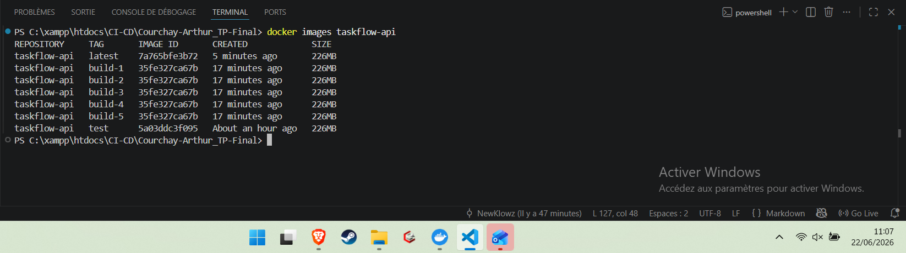
L'API a été développée en Node.js avec Express. Elle permet de gérer des tâches avec un modèle volontairement simple, mais suffisant pour démontrer une chaîne CI/CD complète et testable.
| Champ | Type | Règle |
|---|---|---|
title | String | Obligatoire, trim automatique. |
description | String | Optionnel, valeur par défaut vide. |
status | String | Enum: todo, in-progress, done. |
createdAt | Date | Généré automatiquement. |
| Méthode | Route | Description |
|---|---|---|
| GET | /health | Retourne l'état de l'API, l'uptime et la version. |
| GET | /api/tasks | Liste les tâches. |
| POST | /api/tasks | Crée une tâche. |
| GET | /api/tasks/:id | Retourne une tâche par identifiant. |
| PUT | /api/tasks/:id | Met à jour le statut. |
| DELETE | /api/tasks/:id | Supprime une tâche. |
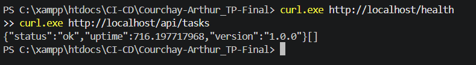
/health et /api/tasks.Les tests Jest couvrent les comportements demandés dans les consignes: health-check, validation du titre, liste des tâches et scénario d'intégration création/récupération. Des cas complémentaires ont été ajoutés pour couvrir les erreurs et les mises à jour.
supertest.Task mocké avec Jest.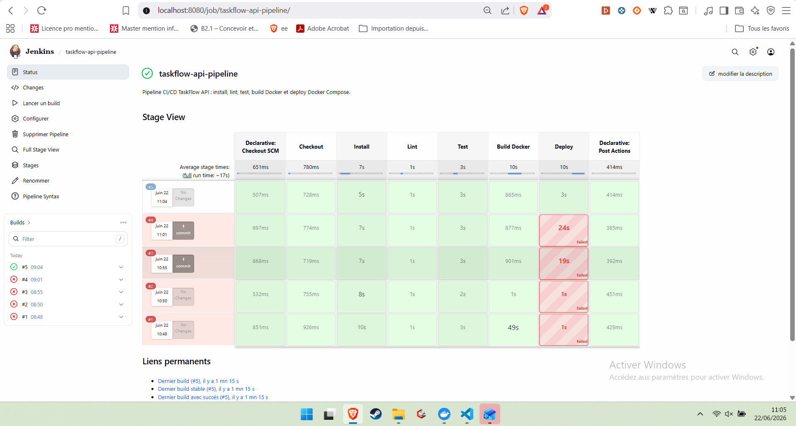
L'application est conteneurisée avec un Dockerfile multi-stage. Le stage builder installe les
dépendances nécessaires au build, tandis que le stage production installe uniquement les
dépendances de production et exécute l'application avec un utilisateur non-root.
| Élément | Décision | Justification |
|---|---|---|
| Image | node:18-alpine | Base légère conforme aux consignes. |
| Multi-stage | builder + production | Sépare devDependencies et runtime. |
| Sécurité | Utilisateur taskflow | Évite l'exécution root en production. |
| Healthcheck | /health | Permet à Compose et Jenkins de vérifier l'API. |
mongodb: base de données avec volume nommé mongodb_data.api: service Express, dépend de MongoDB healthy.nginx: reverse proxy exposé sur le port 80.jenkins: service CI/CD exposé sur le port 8080.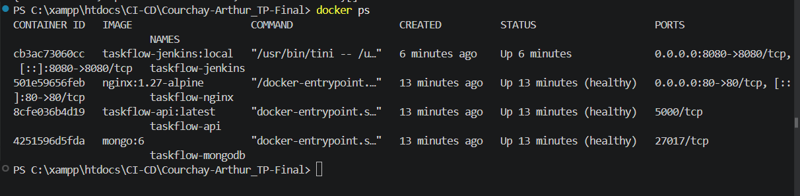
Le pipeline est écrit en syntaxe Declarative et versionné à la racine du dépôt dans le fichier
Jenkinsfile. Il automatise la validation du code et le déploiement de la stack.
| Stage | Commande principale | Rôle |
|---|---|---|
| Checkout | checkout scm | Récupérer le code GitHub. |
| Install | npm ci | Installer les dépendances reproductiblement. |
| Lint | npm run lint | Bloquer le pipeline en cas de violation ESLint. |
| Test | npm test | Lancer Jest et afficher la couverture. |
| Build Docker | docker build | Construire latest et build-N. |
| Deploy | docker compose up | Déployer MongoDB, API et Nginx. |
MONGO_URI est injecté via Jenkins Credentials avec l'ID mongo-uri.
Aucun secret n'est présent dans le Jenkinsfile ou dans le dépôt.
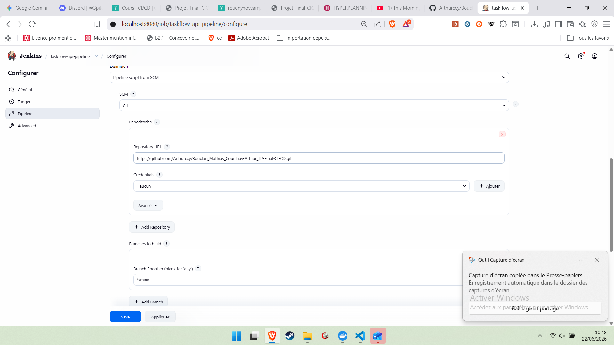
Jenkins est lancé comme service Docker et utilise une image dédiée basée sur
jenkins/jenkins:lts-jdk17. Cette image installe Docker CLI, Docker Compose, Node/npm et les
plugins nécessaires au pipeline.
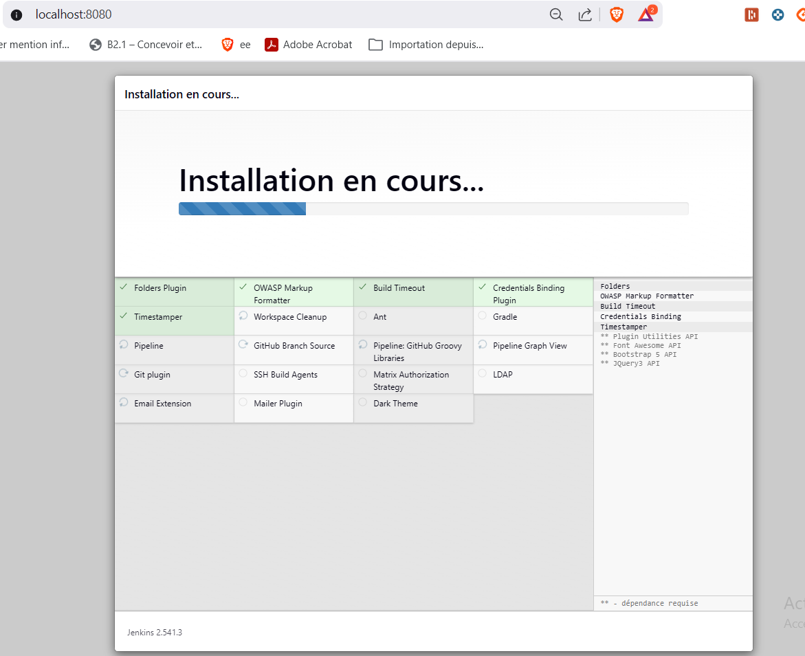
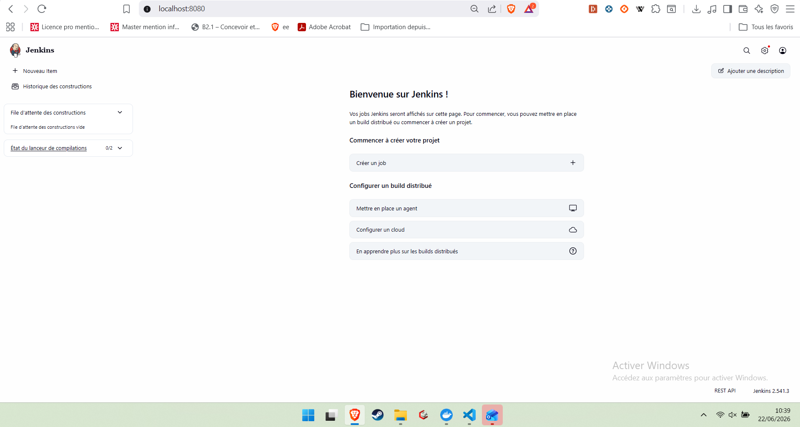
localhost:8080.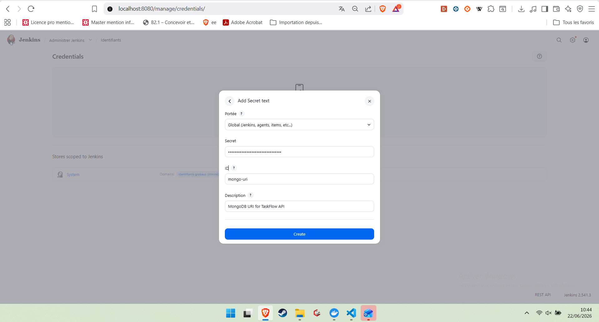
mongo-uri.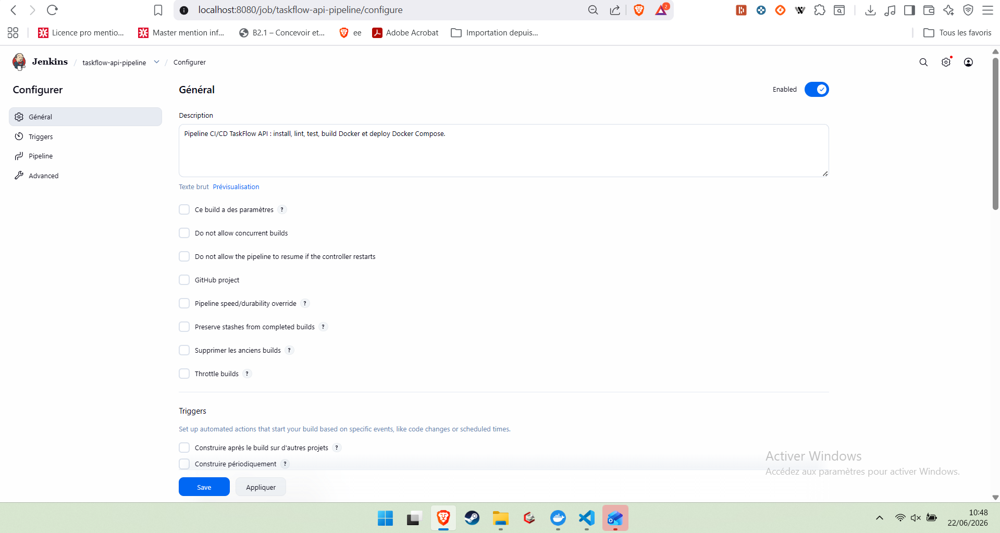
Le pipeline final exécute les contrôles qualité, construit les images Docker et déploie la stack applicative. Les preuves ci-dessous montrent la réussite des tests et le résultat observable côté Docker.
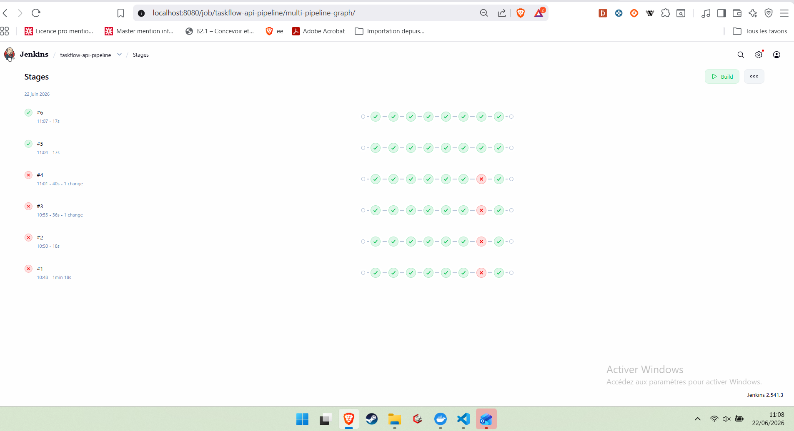
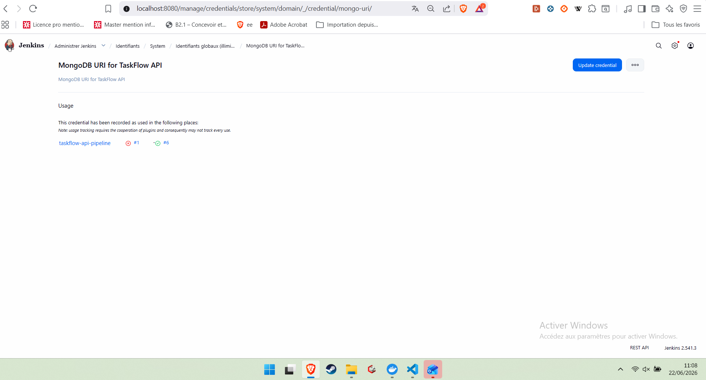
/health et /api/tasks retournent des réponses JSON valides via
Nginx. MongoDB n'est pas exposé à l'extérieur.
Un build rouge a été provoqué volontairement pour vérifier que le pipeline échoue bien au stage
Lint. La violation introduite était simple et contrôlée: utilisation de var et
variable inutilisée. ESLint a bloqué le pipeline, puis un commit correctif a restauré l'état vert.
| Étape | Commit | Résultat |
|---|---|---|
| Violation volontaire | test: trigger intentional lint failure | Échec au stage Lint. |
| Correction | fix: restore lint compliance | Pipeline repassé au vert. |
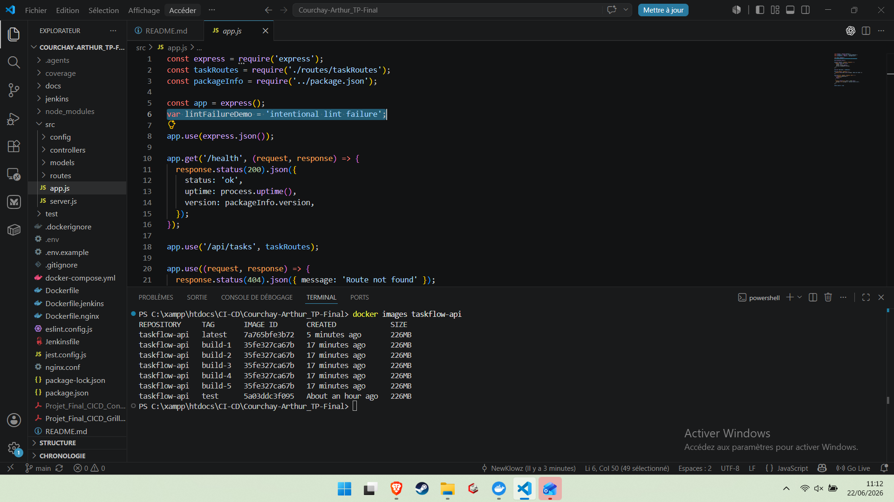
La répartition a été pensée pour rester équilibrée et réaliste: chaque membre a un périmètre principal, mais le binôme a relu et validé l'ensemble du projet afin que chacun puisse l'expliquer.
| Membre | Responsabilités principales | Livrables associés |
|---|---|---|
| Arthur Courchay | Développement API, modèle Task, validation métier, tests Jest, lint, Dockerfile API. | Routes REST, contrôleurs, tests, couverture, README technique. |
| Mathias Bouclon | Infrastructure Docker Compose, Nginx, Jenkins, credentials, captures et webhook. | Stack Docker, reverse proxy, configuration Jenkins, preuves du pipeline. |
| Binôme | Relecture, résolution des blocages, build rouge volontaire, rapport final. | Pipeline vert, documentation, captures, soutenance. |
| Difficulté | Symptôme | Solution |
|---|---|---|
| Conflit de ports avec un ancien TP | Les ports 80 et 8080 étaient déjà utilisés par ProShop. |
Arrêt des conteneurs ProShop avant lancement de TaskFlow. |
| Jenkins sans Node/npm | Le stage Install ne pouvait pas exécuter npm ci. |
Ajout de Node/npm dans Dockerfile.jenkins. |
| Conflit de noms Docker | Jenkins ne pouvait pas créer taskflow-mongodb déjà présent. |
Suppression des container_name fixes et ajout d'un projet Compose stable. |
| Montage Nginx depuis Jenkins | Le bind mount de nginx.conf échouait depuis le workspace Jenkins. |
Création d'une image taskflow-nginx avec la config copiée au build. |
| Validation du build rouge | Il fallait prouver que le pipeline échoue réellement au lint. | Commit volontaire avec violation ESLint, capture du build rouge, puis correction. |
Le projet répond aux objectifs du sujet: application créée par le binôme, conteneurisation complète, orchestration avec Docker Compose, reverse proxy Nginx, pipeline Jenkins versionné, tests automatisés et gestion des secrets via credentials. Les captures prouvent à la fois le fonctionnement nominal et les mécanismes de blocage qualité attendus en CI/CD.